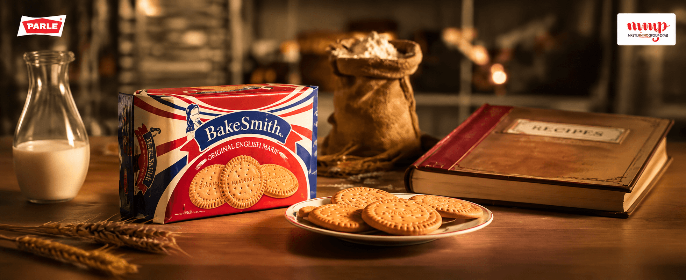

Marie biscuits are familiar and functional. The film needed to build distinction without losing category comfort.
← Back to workA classic bake.
Parle Bakesmith · Brand Film
A classic bake.
With character.

Project overview
An English classic.
Baked for today.
Bakesmith brings a distinctive English-bakery character to the familiar Marie biscuit ritual.
The film builds a warm, crafted world around flour, milk, recipe books and the finished biscuit—giving the product a sense of provenance while keeping taste and everyday enjoyment close.
- Format
- Product Film
- Story
- Craft + Provenance
- Product
- English Marie
- Platform
- Digital Film
The hero film
Meet the original
English Marie.
A warm product film that turns a familiar biscuit into a crafted recipe with a distinct point of view.
The challenge
Make heritage feel
freshly appetising.
The pack, biscuit and English-bakery cues needed to feel like one coherent, memorable world.
The creative approach
Begin with craft.
Finish with appetite.
Build the film around ingredients and the atmosphere of a traditional bake, then let the product become the satisfying conclusion.
Warm light, tactile materials and close product framing give the story a crafted, premium finish.
- 01
Set the world
Warm bakery light and tactile recipe cues.
- 02
Reveal the bake
Ingredient, biscuit and pack details shown with care.
- 03
Land the product
A distinctive English Marie identity held in one frame.
The visual world
Warm craft.
Clear appetite.

The outcome
One product story.
A richer sense of origin.
The film and still-life system give Bakesmith a warm, recognisable product world rooted in craft and appetite.
Crafted character
Bakery cues give a familiar category a distinct personality.
Appetite appeal
Warm close-ups keep biscuit and pack desirability central.
Strong recall
Red, navy and bakery warmth create a memorable identity.
A familiar biscuit.A more distinctive bake.
Have a story worth filming?